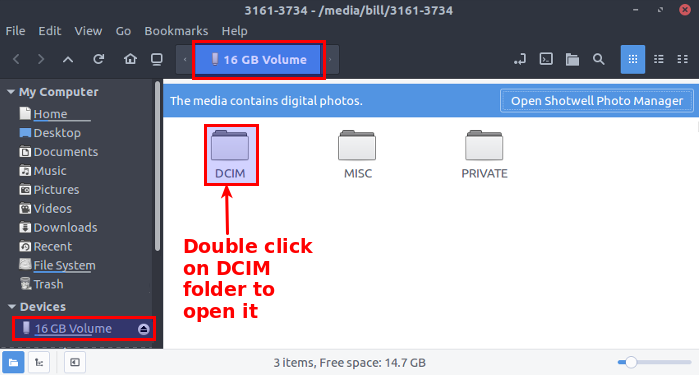
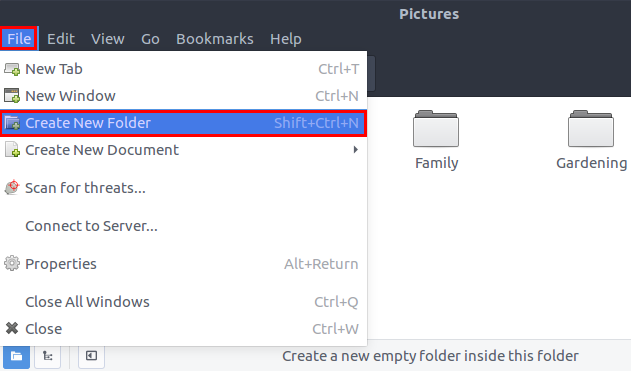
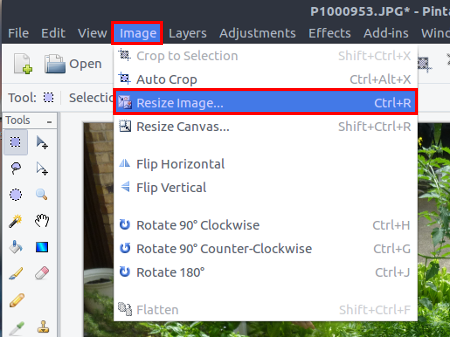
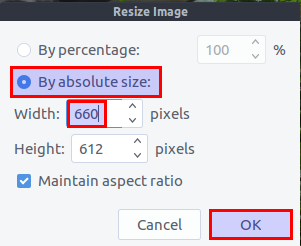
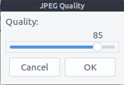

This
document is a guide that shows how to use the Pinta program to
process and save low-resolution, but good quality copies of your
(jpg) photos that can be sent to others as email attachments or
inserted in documents and sent over the Internet. It is not a
tutorial for manipulating or altering photos, or even a comprehensive
Pinta tutorial.
This
document is a guide that shows how to use the Pinta program to
process and save low-resolution, but good quality copies of your
(jpg) photos that can be sent to others as email attachments or
inserted in documents and sent over the Internet. It is not a
tutorial for manipulating or altering photos, or even a comprehensive
Pinta tutorial.
This document is designed to be a guide for a Wasta Linux user, who wants to uploaded photos from their camera or mobile phone to their computer and also wants to prepare low-resolution copies to share with others via email or the Internet.
It makes sense:
When you want to produce copies of your photos that take up less disk space but are good for viewing on a computer screen.
When you want to share photos with others over the Internet and keep the size of your email attachments and data usage small.
When you want to insert photos into a document and keep the resulting document size as small as possible.
The technical terms discussed in this section are presented in a somewhat simplified form. If you find it too technical you can skip down to the section below called Upload your pictures from your camera to your Wasta computer. If you are interested, you can get more technical explanations at the following Wikipedia sites:
Pixel https://en.wikipedia.org/wiki/Pixel
Pixel density https://en.wikipedia.org/wiki/Pixel_density
Subpixel rendering https://en.wikipedia.org/wiki/Subpixel_rendering
JPEG compression https://en.wikipedia.org/wiki/JPEG
A pixel is a point of light or a dot of ink that, together with many other pixels, make up a photo or image on a computer/mobile screen or a printer. For example, the period at the end of each of these sentences is small, but at least 8 pixels contribute to its image on my color computer screen. Here is what that period looks like magnified 40 times:
The 8 pixels in the above image are the 8 squares with various shades of red, green and blue (RGB). When your eyes look at groups of pixels on a color screen, they are so small that your eyes cannot distinguish the various colors of each individual pixel. Your eyes automatically mix those colors together. So, when you look at those 8 pixels at their actual size on a screen, your eyes automatically mix the 8 colored pixels together and perceive the object to be a black period. Color printers do a similar thing by printing ink dots of different color mixes (including black ink) that our eyes perceive to be a printed period. If you were to rotate the above image quickly – or blink your eyes fast enough – while looking at the image above, the colors would mix together and it would appear to be a black dot.
Photos viewed on screens and their printed forms consist of collections of pixels. The normal image size is the image’s width in pixels times its height in pixels. For example an image that is 2400 pixels wide and 2000 pixels high would have an image size of 2400 x 2000 = 4,800,000 pixels or 4.8 megapixels (4.8 million pixels). We can refer to the image as a “2400 by 2000 image”, or a “4.8 megapixel image”. Cameras today typically create images that consist of many millions of pixels (megapizels) – sometimes up to 16 or 20 megapixels!
The resolution of a computer or mobile screen is the density of physical pixels that exist in the screen. The density is often expressed in terms of “pixels-per-inch”. The overall width and height of the screen is the result of its pixel density and the number of physical pixels the manufacturer made into the screen. The more pixels that are put into a certain screen, the higher its resolution, and the more detail an image displayed on that screen can hold. Most computer screens and mobile devices of Wasta users, have a density of 72 pixels-per-inch ( 72 PPI) or 96 pixels-per-inch (96 PPI). Since computer and mobile phone screens are generally limited to 72 or 96 PPI, they are not large enough to display images at their normal image size – where one image pixel occupies one screen pixel. They have to be displayed with a zoom or scale setting of less than 100% in order to view the whole image on the screen.
For example, if the normal image size is 2400 x 2000 (4.8 megapizels), the image would display 25 inches wide by about 20.8 inches high on your computer screen with a resolution of 96 pixels-per-inch [2400 ÷ 96 = 25 inches wide, and 2000 ÷ 96 = 20.8 inches high]. Therefore, when you view a large megapixel image that comes directly from your camera, the Wasta image viewer will automatically “zoom” or “scale” it to a smaller viewable size so that it fits within your computer or mobile phone screen. That is helpful to allow you to see the whole image, but you might not realize that a lot of the pixel image information of those large images is “ignored” or “wasted” when the image is zoomed or scaled to show the whole image to you on your screen.
Most digital cameras today produce photos with millions of pixels – so many in fact that there are a lot more pixels than will fit on our screens. This is why we can use programs like Pinta to make copies of our photos that are greatly reduced or “scaled down” in their number of total pixels. They will still be large enough and look good on our 72 and 96 pixels-per-inch screens. In Step 4 below you will use Pinta to resize an image to a reasonable size for sharing and viewing on computer screens.
Most cameras today produce image files that are compressed. The most common form of compressed image file is the JPEG file – files with a .jpg or .JPG extension. JPEG compression can reduce the physical size of image files by just a little, or by a lot. The more an image file is compressed by JPEG compression, the more image data is lost. The quality of an image can deteriorate if the image is compressed too much. Even so, JPEG compression can easily shrink image files down to 1/10th their original size with very little loss of perceptible image quality. In Step 5 below you will use Pinta to adjust the quality of an image file when that file is saved to disk.
Most cameras and mobile phones have a method for uploading pictures to a computer. This guide illustrates a way to copy files from a Panasonic Lumix camera using the camera’s USB cable.
Plug in your camera to your computer with the camera’s USB cable, then turn your camera on. The camera should allow you to “Connect to your PC” by clicking the camera’s OK button. The Wasta system should automatically start up the File Manager. An illustration might look like this:

Note that the File Manager program mounted the camera’s memory card and named it 16GB Volume under the Devices list in the left side bar in the above illustration. Your camera’s photo device may be named differently. Note also the messages in the blue highlight above the camera device’s folders. It says “The media contains digital photos” and provides a button at right that you can click to “Open Shotwell Photo Manager”. Using the Shotwell program is a good way to organize your photos into albums, however, in this guide we not focus on using the Shotwell program. Instead, we will show you how to make copies of a couple photos that are in the camera’s storage area, and paste them into a sub-folder of your computer’s Pictures folder called “Temporary for filing”. Once located on your computer, we will show how to shrink one of the photos to a much smaller size for sharing with your friends.
Most digital cameras create a folder in their photo storage area called DCIM (for Digital Camera IMages). Double click on the DCIM folder in the File Manager to open the DCIM folder. You should see a sub-folder of the DCIM folder also created by your camera:
Your camera’s DCIM folder will likely have at least one sub-folder whose name begins with a three-digit number (from 100 to 999), followed by a 4 or 5 letter abbreviation for the brand of the camera. If there are more than one such folders, you may need to open each one to find the one with the pictures you want to process.
Double click on the desired sub-folder. In the above illustration the sub-folder is it named 100_PANA by my Panasonic camera. You should now see a list of the still photos that are contained on your camera’s storage area:
In the above illustration, I have just two photos that my camera named P1000953.JPG and P1000954.JPG.
We will now copy these two photos from the camera’s storage to a temporary holding folder on the computer.
With the photo files in view within the File Manager, as shown above, select the photo files that you want to make copies of (while holding the Ctrl key down click on each file to select it):
With the photo files selected, click on the File Manager’s Edit menu and select Copy:
The File Manager will remember that you want to copy the selected files. Note: We will only make copies of these files. We will not remove them from the camera’s storage area. That way you could still use the Shotwell Photo Manager later if you decide to do so, and archive the original photos in an organized album on your computer.
In the left panel of the File Manager under My Computer, click on the Pictures item. The Pictures folder will open and its contents will be displayed. The illustration is an example that shows three existing folders within my Pictures folder:
With the Pictures folder open as shown above, click on the File Manager’s File menu and select the Create New Folder menu item as shown below:

The File Manager will create a new folder with its initial name “Untitled Folder”:
The name Untitled Folder is already highlighted, so just type the new name Temporary for filing. As you type it will replace what was in the name box. Note: If you accidentally click outside the box and the folder ends up with the name Untitled Folder, you can select/highlight the Untitled Folder again, then click on the Edit menu and select Rename... - and type the desired name for the folder.
When the folder has been created it should appear as a folder within your Pictures folder:

Double click the new Temporary for filing folder to open it. The new folder opens and it appears empty:
With the Temporary for filing folder open, click on the File Manager’s Edit menu and select Paste:

Note: If the Paste option is grayed out on the Edit menu, you will need to go back to the section above called Copy the photos you want to share to a temporary folder on your computer, and work your way through to this point in the guide, and try executing the Paste command from the Edit menu again.
Once you have succeeded in getting copies of the photos you want to shrink to the Temporary for filing folder, you can turn the power off to your camera – so it doesn’t waste its battery power.
It is important that you remember the temporary folder’s location that contains the copies you just made (Pictures folder, Temporary for filing sub-folder), since you will need to find that folder again in the section below: Using Pinta to shrink a picture.
The steps below assume the copies of your pictures are now located on your computer and you know where they are located. At this point I have downloaded two photos from my camera and they are now located in a sub-folder of my Pictures folder called Temporary for filing as shown in the following illustration in which the two photo files are being displayed within the File Manager showing the contents of the Temporary for filing folder:
In the steps below we will create a copy of the first of these two files (the photo named P1000953.JPG in the illustration above), shrinking it from its original size of 5.9 Megabytes to a much smaller size of 55 KB! Even though the resulting photo will be only about 1% of the size of the original, it will still be a decent viewable size and good quality for viewing on a computer or mobile phone screen.
Click on the main Menu button at the lower-left corner of your Wasta Desktop. Then click on the Graphics category, and finally click on the Pinta program menu item as shown in the following illustration:
The Pinta program should start up and appear similar to this illustration:

Click on the Pinta program’s File menu and select the Open… menu item as shown below:
The Pinta program will display an Open Image file dialog, showing you the contents of your Pictures folder. You need to click on the sub-folder containing a photo you want to open within Pinta. In our illustration we know that the photos are located in a sub-folder called Temporary for filing. You should navigate to and click on the folder where your photo is located, then click on the Open button in the lower right corner of the dialog to open that sub-folder, until in your case you see the photos you want listed in the main window of the dialog. In our case we have two photos that our camera named P1000953.JPG and P1000954.JPG, and they appear in the main window with the first photo file already highlighted, and with a preview of the photo within the right-side of the main window, looking like this:
With the photo you want to open in Pinta highlighted/selected, click on the Open button. Pinta will open the photo and display it in its main window – read to edit:
You can crop the photo to focus in on the subject matter, and eliminate parts of the picture that can be omitted from view. Cropping also can make a picture take up a smaller disk space. If you hover your mouse over the Tools in the Tools sidebar, you will see that the upper left tool is the Rectangle Select tool. Click on the “Rectangle Select” tool:
You will notice that the mouse pointer becomes a cross-hair pointer. You can click and drag the mouse pointer from one corner of the desired crop area to its opposite corner, and then release the mouse button. The rectangle shaped area is bordered by a dashed line. If the dashed rectangle is not positioned quite right click anywhere on the image to remove it and try dragging a new selection rectangle – until you get the desired view selected within the dashed rectangle. My rectangle for cropping looks like this:
Note that when cropped the part of the image outside the dashed rectangle will be removed. With the part you want selected, crop the image by clicking the Image menu and selecting Crop to Selection as illustrated below:
The part of the image that was within the dashed rectangle will now fill the main window:
If you do not like the crop result, you can click on the Undo button in the Pinta tool bar to undo your action(s) and try again. Cropping an image can often make it look better and reduce its size on disk. Our original photo took up 5.9 MB on disk. After cropping the photo shrunk to 1.3 MB on disk. Cropping made the image shrink down to use just 22% of the original disk space.
We will now resize the image. With the image displaying in the Pinta main window, click on the Image menu and select the Resize Image… menu item as shown below:

The Resize Image dialog initially appears like this illustration:
Pinta allows you to resize the image “By percentage” or “By absolute size”. The “By percentage” option is selected by default, and it starts at 100% - which would be no change in size. You would need to change 100 to a smaller percentage to make the image smaller. What value should you use?
The “Width” and “Height” in pixels information can help you decide which method of resizing is best for this photo. In the above illustration the Width of the cropped photo is 2871 pixels and the Height is 2666 pixels. That is actually still a very large image. If this image were displayed on a computer screen (at the common screen resolution of 96 pixels-per-inch) at its “natural” size it would span about 30 inches wide and 28 inches tall! Typically, the width between the left and right margins of a LibreOffice document page displaying on a computer screen is about 660 pixels (about 7 inches) when the document zoom is showing the page at 100%. So, if we wanted our 2871 pixel wide photo to span the area from a document’s left margin over to its right margin filling the width of the entire page, we could either calculate the percentage we would need to reduce the image size (660 ÷ 2871 × 100 = 23%), or it would be easier to simply choose the option “By absolute size”, and then change the Width value in pixels from 2871 to 660, as shown in the illustration below:

Note that after entering 660 in the Width box, the Height value will adjust automatically to the correct value if you simply click in the Height box with your mouse pointer – as long as the “Maintain aspect ratio” stays selected (which is will be by default). Now click the OK button to effect the resize.
You may be surprised to see the result of the Resize operation which initially looks like this:

The result is misleading. The reason it appears so “small” is because the image was initially so large when loaded into Pinta that Pinta set its zoom value very small (probably about 20%) so that all of the image could be seen within its main window. To see the image displayed now at its normal size, click on the View menu and select Normal Size, as shown below:
The image is displayed at its “normal size” and fills Pinta’s main window as shown in this illustration:
Note: You may need to move the scroll bars a little to see the whole image, depending on the size of Pinta’s program window on your screen. After our resize operation, the cropped image (1.3 MB) shrunk was down to occupy only 112 KB of disk space. The size of our photo is now just 2% of its original size, but it was still large enough to fill the width of a full page in a word processing document!
We have one more step to do. We need to save the image as a photo with a new name in order to retain our original file, and distinguish our cropped and resized version from the original. We also will be given the opportunity to change the compression quality when we save our changed photo.
Click on Pinta’s File menu and select the Save As… menu option as shown below:

Pinta’s “Save Image File” dialog appears as shown in the following illustration:
Give your new cropped and resized file a new name in the Name box. In the illustration above the file that was originally called P1000953.JPG I’ve renamed it to a more descriptive name in the Name box “Compost-garden-collecting-lettuce.JPG”.
Suggestions:
The Save Image File dialog shown above can be used to rename files so that the new version of the file doesn’t overwrite the original version. You simply change the name in the Name box. For example, if you had previously named the original file when it came from the camera to a descriptive name such as “Compost-garden-collecting-lettuce.JPG”, you might name this new file in a way that shows how it is different from the original – something like “Compost-garden-collecting-lettuce-lowres.JPG” or even “Compost-garden-collecting-lettuce-lowres-660px.JPG”. In the first case the new name identifies the file as a “lowres” (low resolution) version of the original. In the second case the new name identifies the file as being both a lowres version, and its name further tells that it has a width of 660 pixels.
The Save Image File dialog shown above can also be used to save the processed photo to a different folder from the “Temporary for filing” folder location shown above. You can do that by clicking on the Pictures folder button, then navigating within the dialog to a different sub-folder within the main Pictures folder – before pressing Save to save the file.
Once you have renamed your file, click on the Save button.
Pinta will the show you the “JPEG Quality” dialog which appears like this illustration:

The first time you save a file within Pinta it will probably set the Quality value to 85 or higher. For most photos that people will view on a computer screen, you can safely set the Quality value to around 50 without any noticeable degrading of the photo’s quality. To change the Quality value simply grab the circle on the slider with the mouse and drag it to the left until you reach a value around 50 as shown below:
A little higher or lower won’t really matter. Then Click the OK button to finish saving the file.
Our photo which originally took up 5.9 MB of disk space is now a very small and manageable 55 KB of disk space. It is now just 1% of its original size on disk!
Note: After setting the quality once to a value of 50 Pinta will generally continue using that value when saving all other photos, unless you change it to a different value.
We showed that it is possible to shrink photos down to as little as 1% of their original disk space without loosing a good viewing size and without sacrificing quality for viewing on computer screens. Reducing the disk size of photos as described can also save you a lot of Internet connection time if you have a low Internet connection. You can also save a lot on Internet data charges for email and file transfers if you are paying per megabyte.
The Pinta photo processing described in the above steps is designed for displaying images on a computer screen most of which display images at 72 or 96 pixels-per-inch. It is quite suitable for sharing images with people who will be viewing them on a computer screen. Your Pinta photo process, however, might be a bit different if you want to print your images. Most printers, are able to print at 300 pixels-per-inch resolution. Some can print at 600 pixels-per-inch or even 1200 or 2400 pixels-per-inch.
You might want to experiment. I’ve found that the above steps work quite well for most photos that I put into a newsletter and print them using a color laser printer. Occasionally I will use a higher resolution in Step 4 Resizing the image and possibly increase the JPEG Quality to 60 or 70 when saving them in Step 5, for larger pictures that span a printed page. Of course, for images that you only want to print at the highest quality possible on photo paper for framing, you might just use the original photo files for printing without shrinking them at all.